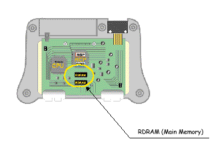
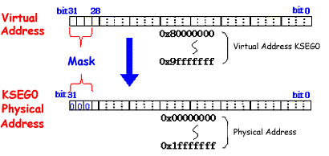
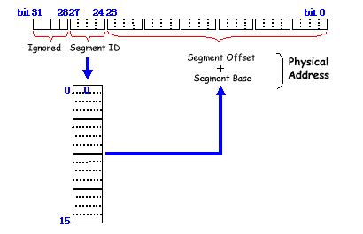

Main memory is provided by two very high-speed memory chips called RDRAM (Rambus DRAM). Each of the two RDRAM chips in the N64 provide a memory map of 2 megabytes by 9 bits for a total memory size of 4 megabytes by 9 bits. N64 has been designed so that all three processors (CPU, RSP, and RDP) can share this memory.
Also, N64 provides a tremendous advantage in that any place in RDRAM can be used not only to store the program or data but also to be the frame buffer, the Z-buffer, or the audio buffer. In addition, connecting the Memory Pak to the N64 Control Deck expands RDRAM by another 4 megabytes by 9 bits.
Be careful when working with CPU addresses. They are virtual addresses, not physical addresses. The CPU is operated in 32-bit kernel mode which means that each address space is 32 bits. (Note that this in no way excludes 64-bit integer arithmetic.)
In 32-bit kernel mode, memory is divided into the following five segments:
Start - End ID Use 0x00000000 - 0x7fffffff KUSEG TLB mapping 0x80000000 - 0x9fffffff KSEG0 Direct map, cache 0xa0000000 - 0xbfffffff KSEG1 Direct map, non-cache 0xc0000000 - 0xdfffffff KSSEG TLB mapping 0xe0000000 - 0xffffffff KSEG3 TLB mapping
Usually, you'll want to use KSEG0 where mapping between physical and virtual addresses is simple. In this segment, the address that masks the upper 3 bits of the virtual address becomes the physical address. Of course, you can use the other segments that use the TLB (translation lookaside buffer).
The RSP uses a segment address system to identify the RDRAM address where the display list, matrix data, vertex data, or texture data is located. This information is used by the RSP-driven graphics microcode, which can manage up to 16 segments.
In the 32-bit address given as the segment address, the four bits from bit 31 to 28 are ignored. The four bits from bit 27 to 24 form a segment ID to identify the base address of one of the 16 segments. The 24 bits from bit 23 to 0 hold the segment offset. To find the physical address, simply add the segment offset to the segment base address specified by the segment ID.
The RDP uses the physical address. By design, the display list is passed to the RDP by way of the RSP. In the RSP, the segment address is converted to the physical address. So the display list can always use the segment address system regardless of whether it is to be processed by the RSP or the RDP.
Nintendo® Confidential
Copyright © 1999
Nintendo of America Inc. All Rights Reserved
Nintendo and N64 are registered trademarks of Nintendo
Last Updated March, 1999